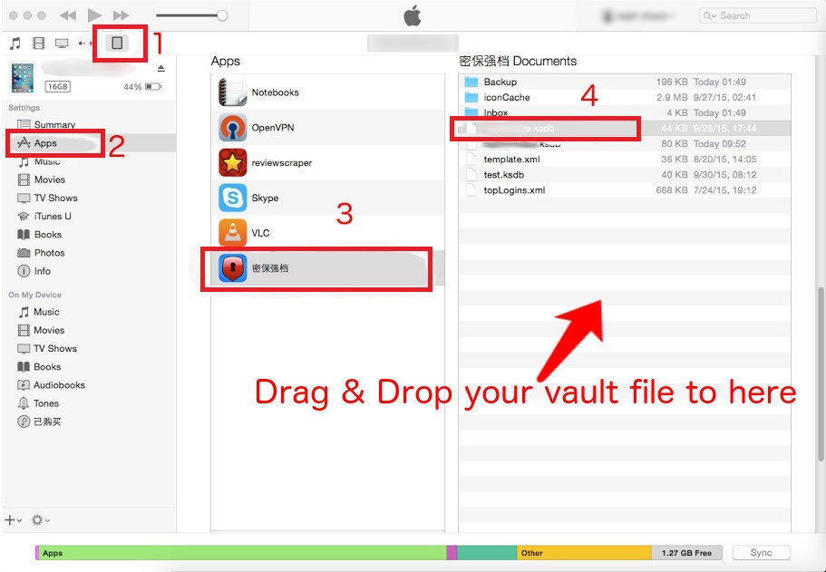
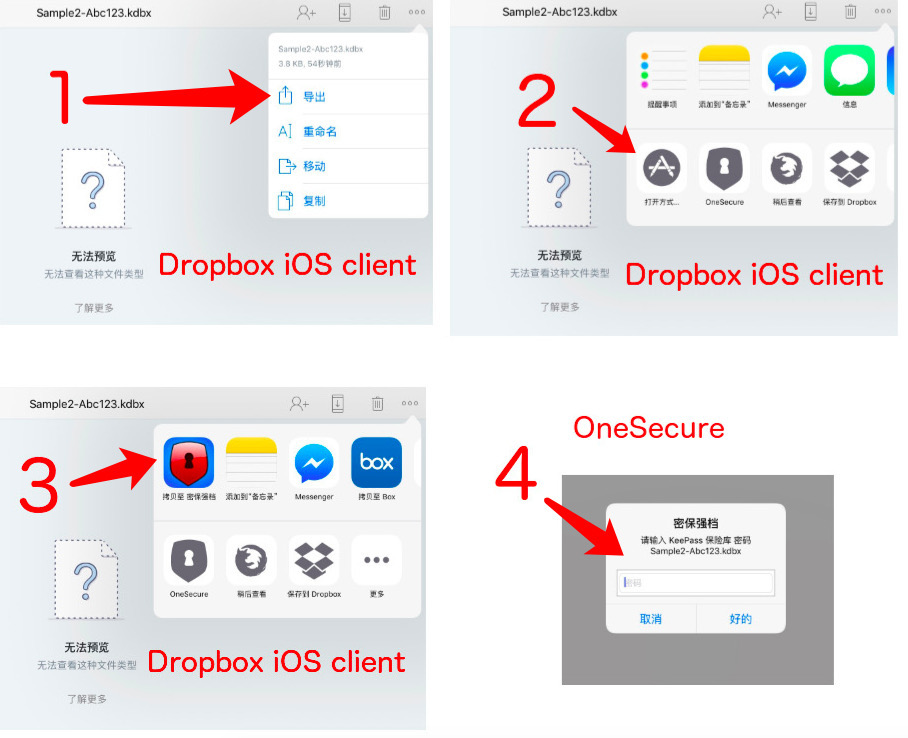

According to the design policy, all data of this application was stored in the user device and cloud storage services authorized by user only. Any guys, including the developers, can NOT touch your data. You need NOT to worry about it.
If you are a new OneSecure user or have used OneSecure in the past but want to start over again, you are in the right place. This page will walk you through OneSecure's quick and easy setup process. You will be up and ready to start making your digital life more secure and easy to manage in no time.
In order to use OneSecure, you need to create items in it. You can create Login, Credit Card, and Identity items in addition to Secure Notes, or even Bank Accounts, Email Accounts, Passports, and more. As you wish.
To manage your items, you can create some categories. In default, there have 3 categories already. If you do not like it, you can change the names of them, or delete them.
The Settings page let you tailor your OneSecure experience to meet your needs.
If you need to change your Master Password, adjust your OneSecure security preferences, start syncing, make changes to how you sync, change the way your passwords are displayed, or customize integrated web browser's behavior, you can do so in the Settings page.
Tap the gear icon in the left down corner of the screen to present the settings page.
Select timeout type, you can change how long OneSecure can be open and unused before it locks. If you carry your iOS device with you wherever you go, you may want OneSecure to lock sooner. On the other hand, if your iOS device is always in a safe location, you may want OneSecure to lock after a longer period of time. Additionally, people often choose a shorter period of time for this setting during vacations.
Tap this option and follow the prompts to change your Master Password.
Note: After you changed your master password, you must sync it to your other devices by tap Sync button with old master password.
Tap Clear Clipboard to select how long the information you copy from OneSecure is available to be pasted. By default, your information will never be cleared, but you may decide that you don't want your passwords and other sensitive information hanging out on your clipboard for very long.
"Hide Passwords" settings allow you to reveal or conceal your passwords all of the time.
OneSecure conceals your passwords by default, which means they are displayed as a series of dots to make sure they're safe from prying eyes. If you wish to reveal all of your passwords all of the time, switch Hide Password off.
Tap this option, then confirm by tapping on Erase Data in the alert that appears to delete your OneSecure data from your device. Delete Data and Settings will delete all OneSecure data on your device, but will not affect data already synced to other devices or sync services.
With the integrated web browser, you can automatically log in to websites and securely fill out registration forms with your shipping and credit card information when you're shopping. This is the place where you can change your browser settings.
Auto-Submit Logins is switched off by default. If you switch it on, it means that you can login websites by tap "login" button simplely after OneSecure fills in your username and password automatically.
If a website doesn't load properly in browser you can tap this button to clear the cache, then reloading the website.
To clear cookies and other data from websites, tap "Clear Websites Data".
Keeping your OneSecure database in sync across all of your devices has never been easier. No matter what kinds of devices you use, you can have all of your information easily available.
Note: Syncing need you to buy OneSecure Professional Features to unlock it.
Need you turn on you iCloud functionality in Settings application of your device.
Need you have a Dropbox account and authorize OneSecure to access dropbox files.
Provide an occasion to buy products, such as Professional Features, etc.
You can import your Keepass file or OneSecure vault via iTunes like the following image.

You can import Keepass file or OneSecure vault from your Dropbox iOS client like the following image.
